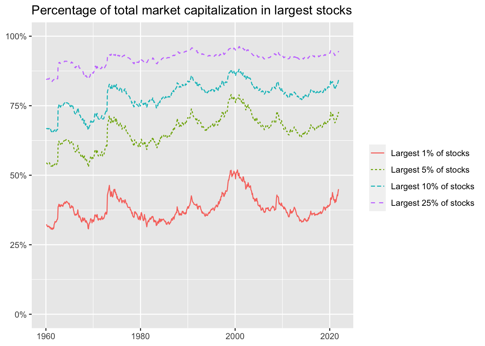
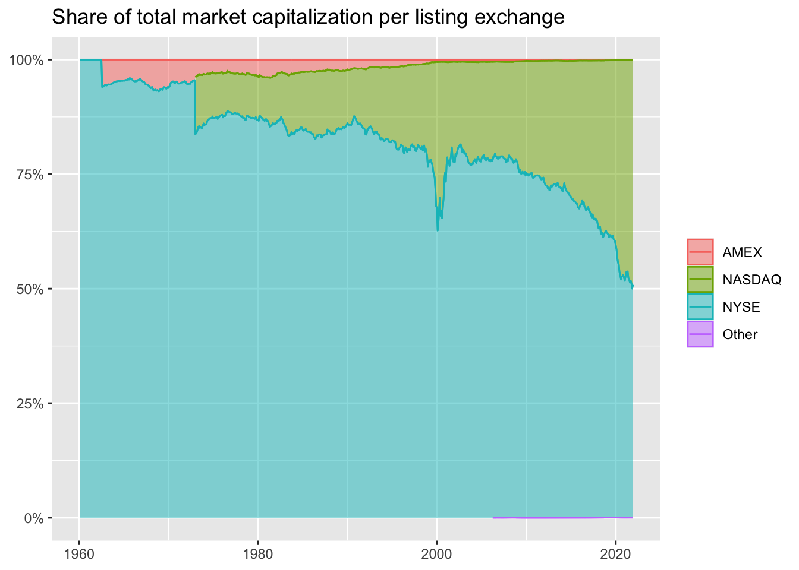
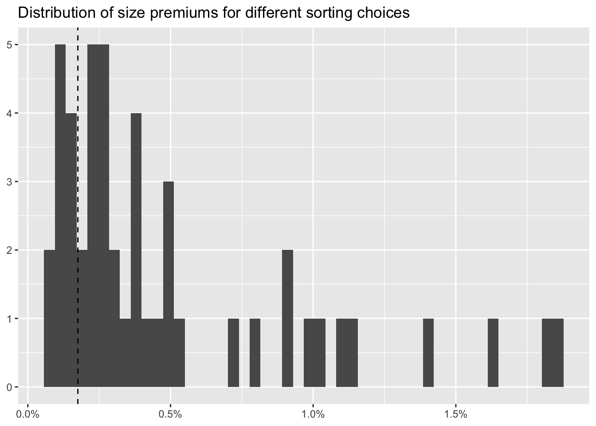

library(tidyverse)
library(DBI)
library(scales)
library(sandwich)
library(lmtest)
library(furrr)
library(rlang)8 Size Sorts and p-Hacking: Original code
8.1 Data Preparation
tidy_finance <- dbConnect(
duckdb::duckdb(),
"data/tidy_finance.duckdb",
read_only = TRUE)
crsp_monthly <- tbl(tidy_finance, "crsp_monthly") |> collect()
factors_ff_monthly <- tbl(tidy_finance, "factors_ff_monthly") |> collect() 8.2 Size Distribution
crsp_monthly |>
group_by(month) |>
mutate(
top01 = if_else(mktcap >= quantile(mktcap, 0.99), 1, 0),
top05 = if_else(mktcap >= quantile(mktcap, 0.95), 1, 0),
top10 = if_else(mktcap >= quantile(mktcap, 0.90), 1, 0),
top25 = if_else(mktcap >= quantile(mktcap, 0.75), 1, 0)
) |>
summarize(
total_market_cap = sum(mktcap),
`Largest 1% of stocks` = sum(mktcap[top01 == 1]) / total_market_cap,
`Largest 5% of stocks` = sum(mktcap[top05 == 1]) / total_market_cap,
`Largest 10% of stocks` = sum(mktcap[top10 == 1]) / total_market_cap,
`Largest 25% of stocks` = sum(mktcap[top25 == 1]) / total_market_cap,
.groups = "drop"
) |>
select(-total_market_cap) |>
pivot_longer(cols = -month) |>
mutate(name = factor(name, levels = c(
"Largest 1% of stocks", "Largest 5% of stocks",
"Largest 10% of stocks", "Largest 25% of stocks"
))) |>
ggplot(aes(
x = month,
y = value,
color = name,
linetype = name)) +
geom_line() +
scale_y_continuous(labels = percent, limits = c(0, 1)) +
labs(
x = NULL, y = NULL, color = NULL, linetype = NULL,
title = "Percentage of total market capitalization in largest stocks"
)
crsp_monthly |>
group_by(month, exchange) |>
summarize(mktcap = sum(mktcap),
.groups = "drop_last") |>
mutate(share = mktcap / sum(mktcap)) |>
ggplot(aes(
x = month,
y = share,
fill = exchange,
color = exchange)) +
geom_area(
position = "stack",
stat = "identity",
alpha = 0.5
) +
geom_line(position = "stack") +
scale_y_continuous(labels = percent) +
labs(
x = NULL, y = NULL, fill = NULL, color = NULL,
title = "Share of total market capitalization per listing exchange"
)
create_summary <- function(data, column_name) {
data |>
select(value = {{ column_name }}) |>
summarize(
mean = mean(value),
sd = sd(value),
min = min(value),
q05 = quantile(value, 0.05),
q50 = quantile(value, 0.50),
q95 = quantile(value, 0.95),
max = max(value),
n = n()
)
}
crsp_monthly |>
filter(month == max(month)) |>
group_by(exchange) |>
create_summary(mktcap) |>
add_row(crsp_monthly |>
filter(month == max(month)) |>
create_summary(mktcap) |>
mutate(exchange = "Overall"))Adding missing grouping variables: `exchange`# A tibble: 5 × 9
exchange mean sd min q05 q50 q95 max n
<chr> <dbl> <dbl> <dbl> <dbl> <dbl> <dbl> <dbl> <int>
1 AMEX 415. 2181. 7.57 12.6 75.8 1218. 25719. 145
2 NASDAQ 8651. 90038. 7.01 29.3 429. 18781. 2902368. 2779
3 NYSE 17858. 48619. 23.9 195. 3434. 80748. 472941. 1395
4 Other 13906. NA 13906. 13906. 13906. 13906. 13906. 1
5 Overall 11349. 77458. 7.01 34.3 796. 40647. 2902368. 4320assign_portfolio <- function(n_portfolios,
exchanges,
data) {
breakpoints <- data |>
filter(exchange %in% exchanges) |>
reframe(breakpoint = quantile(
mktcap_lag,
probs = seq(0, 1, length.out = n_portfolios + 1),
na.rm = TRUE
)) |>
pull(breakpoint) |>
as.numeric()
assigned_portfolios <- data |>
mutate(portfolio = findInterval(mktcap_lag,
breakpoints,
all.inside = TRUE
)) |>
pull(portfolio)
return(assigned_portfolios)
}compute_portfolio_returns <- function(n_portfolios = 10,
exchanges = c("NYSE", "NASDAQ", "AMEX"),
value_weighted = TRUE,
data = crsp_monthly) {
data |>
group_by(month) |>
mutate(portfolio = assign_portfolio(
n_portfolios = n_portfolios,
exchanges = exchanges,
data = pick(everything())
)) |>
group_by(month, portfolio) |>
summarize(
ret = if_else(value_weighted,
weighted.mean(ret_excess, mktcap_lag),
mean(ret_excess)
),
.groups = "drop_last"
) |>
summarize(size_premium = ret[portfolio == min(portfolio)] -
ret[portfolio == max(portfolio)]) |>
summarize(size_premium = mean(size_premium))
}ret_all <- compute_portfolio_returns(
n_portfolios = 2,
exchanges = c("NYSE", "NASDAQ", "AMEX"),
value_weighted = TRUE,
data = crsp_monthly
)
ret_nyse <- compute_portfolio_returns(
n_portfolios = 2,
exchanges = "NYSE",
value_weighted = TRUE,
data = crsp_monthly
)
tibble(
Exchanges = c("NYSE, NASDAQ & AMEX", "NYSE"),
Premium = as.numeric(c(ret_all, ret_nyse)) * 100
)# A tibble: 2 × 2
Exchanges Premium
<chr> <dbl>
1 NYSE, NASDAQ & AMEX -0.0320
2 NYSE 0.108 p_hacking_setup <-
expand_grid(
n_portfolios = c(2, 5, 10),
exchanges = list("NYSE", c("NYSE", "NASDAQ", "AMEX")),
value_weighted = c(TRUE, FALSE),
data = parse_exprs(
'crsp_monthly;
crsp_monthly |> filter(industry != "Finance");
crsp_monthly |> filter(month < "1990-06-01");
crsp_monthly |> filter(month >="1990-06-01")'))plan(multisession, workers = availableCores())
p_hacking_setup <- p_hacking_setup |>
mutate(size_premium = future_pmap(
.l = list(
n_portfolios,
exchanges,
value_weighted,
data
),
.f = ~ compute_portfolio_returns(
n_portfolios = ..1,
exchanges = ..2,
value_weighted = ..3,
data = eval_tidy(..4)
)
))p_hacking_results <- p_hacking_setup |>
mutate(data = map_chr(data, deparse)) |>
unnest(size_premium) |>
arrange(desc(size_premium))
p_hacking_results# A tibble: 48 × 5
n_portfolios exchanges value_weighted data size_premium
<dbl> <list> <lgl> <chr> <dbl>
1 10 <chr [3]> FALSE "filter(crsp_monthly, mon… 0.0164
2 10 <chr [3]> FALSE "filter(crsp_monthly, ind… 0.0134
3 10 <chr [3]> FALSE "crsp_monthly" 0.0116
4 10 <chr [3]> TRUE "filter(crsp_monthly, mon… 0.00782
5 5 <chr [3]> FALSE "filter(crsp_monthly, mon… 0.00740
6 10 <chr [3]> TRUE "filter(crsp_monthly, ind… 0.00729
7 10 <chr [3]> FALSE "filter(crsp_monthly, mon… 0.00667
8 10 <chr [3]> TRUE "crsp_monthly" 0.00612
9 5 <chr [3]> FALSE "filter(crsp_monthly, ind… 0.00568
10 5 <chr [3]> FALSE "crsp_monthly" 0.00472
# ℹ 38 more rowsp_hacking_results |>
ggplot(aes(x = size_premium)) +
geom_histogram(bins = nrow(p_hacking_results)) +
labs(
x = NULL, y = NULL,
title = "Distribution of size premiums for different sorting choices"
) +
geom_vline(aes(xintercept = mean(factors_ff_monthly$smb)),
linetype = "dashed"
) +
scale_x_continuous(labels = percent)
dbDisconnect(tidy_finance, shutdown = TRUE)